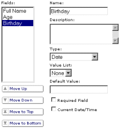
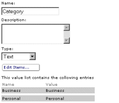
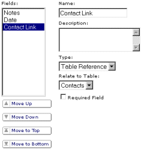
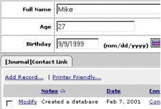

|
The tutorial starts by creating a basic table and then adding records
to it. It then moves on to creating a value list for contact categories.
Last, it explains how to create a table and create a link to another
table, then how create a view to display the results.
1. Creating the Contacts database
Click Create a New Database
- Enter
Contact Manager into the
Name text box, then click Save
- Click Author under your database
2. Creating the Contacts table
Here, you will create the contacts table.
Select Tables from the Type navigation pull-down menu
- Click Basic Settings
Enter Contacts into the Name
text box, then click Save
- Click Fields
- Click Add
- Enter
Full Name into the
Name text box
- Select Text from the Type pull-down menu
- Click Add
- Enter
Age into the Name
text box
- Select Number from the Type pull-down menu
- Click Add
- Enter
Birthday into the Name
text box
- Select Date from the Type pull-down menu
- Click Save
The Contacts table should look like this:

3. Adding records into the Contacts table
Here, you will add the first record into the contacts table.
Select Browse from the Task navigation pull-down menu
- Click Add Record
- Enter your name into the Full Name text box
- Enter your age into the Age text box
- Enter your birthday into the Birthday text box
- Click Save
You have now created a simple table and added data into it. From here,
you can:
- Click Modify to edit your data
- Click Printer Friendly to display a report style page
- Select the check-box next to your name and click Delete
Selected to delete the data
4. Adding more functionality
Here, you will create a Value List to create a contact category with
the values Business and Personal.
Select Author from the Task navigation pull-down menu,
and Database from the Type navigation pull-down menu
- Click Value Lists
- Click Add
- Enter
Category into the Name
text box
- Click Edit Items
- Click Add
Enter Business into the Name
and Value text boxes
- Click Add
Enter Personal into the
Name and Value text boxes
- Click Done
- Click Save
The Category value list should look like this:

Select Tables from the Type navigation pull-down menu
- Click Fields
- Click Add
Enter Category into the Name
text box
Select Category from the Value List pull-down menu
- Click Save
Select Browse from the Task navigation pull-down menu
- Click Modify on the row with your name
- Change Category from Business to Personal
- Click Save
5. Linking data together in tables
Here, you will create a new table called Journal and create a table
reference and a view to see it in action.
Select Author from the Task navigation pull-down menu
Select Add a Table from the Name navigation pull-down
menu
- Enter
Journal into the Name
text box
- Click Save
- Click Fields
- Click Add
- Enter
Notes into the Name
text box
- Click Add
- Enter
Date into the Name
text box and select Date from the Type pull-down
menu.
- Select Current Date/Time to automatically insert the
current date when a new record is created.
- Click Add
- Enter
Contact Link
into the Name text box
- Select Table Reference from the Type pull-down
menu
- Select Contacts from the Relate to Table pull-down
menu. This tells the table that this field links to the Contacts
table.
- Click Save
The Journal table should look like this:

Select Views from the Type navigation pull-down menu
- Enter
Simple into the Name
text box
- Select Contacts from the Base Table pull-down menu
- Click Save
- Click Fields
- Click Add View Fields
- Select all fields from the Available Fields list. This
is usually accomplished by selecting the first item, then holding
down the shift key and selecting the last item.
- Click Add Field
- Click Done
- Select the [Journal]Contact Link field from the Fields
list
- Replace the contents of the Name text box with
Journal
- Click Save
Select Browse from the Task navigation pull-down menu
- Click Modify
- In the Journal tab, click Add Record
- Enter
Created a database
in the Notes text box. Notice the date was inserted automatically.
You may change the date if it is not correct.
- Click Done
- Click Save
The Contact detail view should look like this:

You now have a simple, but relatively powerful starting point for a
contact manager. This concludes Tutorial 1.
|